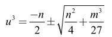
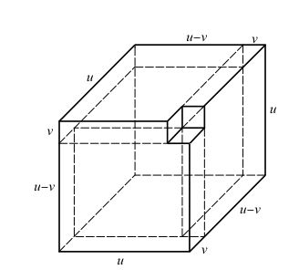

塔塔利亚和费奥尔的打赌事件一时之间成为人们街头巷尾热议的话题。它勾起了一个怪人的兴趣。
这个人就是传奇数学家吉罗拉莫·卡尔达诺。德国数学家莱布尼茨曾经这样评价他：“卡尔达诺是一个拥有所有缺点的伟人。假若没有这些缺点的话，他会是无与伦比、独一无二的伟人。”
卡尔达诺的父亲是个爱好数学的律师，还是达·芬奇的好友。他天性放荡不羁，所到之地，处处遗爱。卡尔达诺就是他同一个无名女人的私生子。卡尔达诺在自传中说，虽然母亲很不想要他这个孩子，但他还是在公元1501年9月24日出生了。母亲花了三天时间才把他生下来，自己奄奄一息。显然，他的出生并不受欢迎。由于身世不明不白，他一辈子遭人白眼，养成了玩世不恭的个性，花天酒地，无所不为。二十岁的时候，他花光了父亲留下的积蓄，转靠赌博为生。他人极聪明，有非常好的数学底子，仗着脑瓜好使，赢多输少，名声越来越坏。他进入帕都亚大学，主修医学，可仍然不招人喜欢，多次申请进入米兰的医学院，都因狼藉的名声遭到拒绝。尽管如此，他后来还一度成为颇有名声的医师。他第一个明确指出，先天耳聋的人不需要先学讲话也可以学习。他第一次正确地描述了伤寒病。很多人相信，两千年前雅典城里的大灾疫就是伤寒。
这个品行糟糕的家伙极富才华，研究硕果累累。他一生中出版了一百三十一种著作，还有一百一十一种尚未完成。他发明了密码锁、万向轴，还有万向接头。后两种发明在现代汽车、火车、机床等各种机械上都能看得到。在几何学里，他发现了圆内螺线，也就是卡丹螺线，后来在高速印刷机上被广为应用。他在水力学上也有重要贡献，并且正确指出制造永动机是不可能的。他一个人出版过两部自然科学百科全书，其中包括大量的发明创造、科学事实，也含有各种不可思议的迷信。他还发明了一种叫作卡丹网格式密码（在法语世界中卡尔达诺的名字被翻译成“卡丹”）的东西，专门用来把文字变成别人无法破译的密码。他写的书，内容包括医学、算法、代数、几何、音乐、机械、炼金术、自然现象，外加一本自传。其中最有名的一本书名叫《大术》，我们后面还要谈到。
卡尔达诺花天酒地的习性使他总是缺钱花。六十岁那年，他写了一本书，专门讨论博弈，这是世界上第一本系统研究概率论的著作。因为里面涉及很多不光彩的赌博知识，这本书到他死后六十年才被发表。
话说卡尔达诺从祖安尼那里听到“决斗”的故事，惊异万分。因为他不久前刚刚研究过帕乔利的一本书，其中宣称三次方程的普遍解不存在。这正是帕乔利访问博洛尼亚大学之前出版的那本书。卡尔达诺玲珑剔透，可是过多的事情使他分心旁骛，因而轻信了帕乔利的结论。他马上设法同塔塔利亚联系，于是，通过一位中间人，两位数学家开始正式对话。
卡尔达诺告诉塔塔利亚，自己正在写一本关于代数的书，希望塔塔利亚能够允许他把三次方程的解法写到书里去。塔塔利亚拒绝了。他说自己也打算写一本书，自然要把这个发现包括在内。卡尔达诺于是要求看看塔塔利亚的解法，并且许诺，自己一定坚守秘密，对谁也不讲。塔塔利亚又拒绝了。
于是，卡尔达诺直接写信给塔塔利亚，一面表达不满，一面又闪烁其词地说，他一直在对自己的保护人——米兰总督阿尔方索·达瓦洛斯（Alfonso d'Avalos，公元1502—公元1546）盛赞塔塔利亚的才智。塔塔利亚接到这封信以后，突然改变了主意，大概他意识到结识总督对自己的前途影响重大。他回信给卡尔达诺，婉转地表示希望能觐见总督大人。卡尔达诺立即邀请塔塔利亚到自己家里来，并允诺帮助他见到总督。
1539年3月，塔塔利亚从威尼斯来到米兰。令他失望的是，总督不在米兰，卡尔达诺负责管理客人的一切事务。不几天，两个人的话题就回到了三次方程上。卡尔达诺凭三寸不烂之舌使塔塔利亚答应向其展示自己的结果，不过有一个条件，那就是卡尔达诺必须郑重起誓绝不对任何人谈起这个结果。卡尔达诺说：“我以《圣经》和绅士的忠诚对你发誓，假如你告诉我这个结果，我不仅绝不发表你的发现，而且，我以基督徒的诚信保证，将以密码的方式将你的发现记录下来，以保证我死后也没有人能读得懂。”
塔塔利亚犹犹豫豫地打开了笔记本，卡尔达诺努力压制着内心的激动，一字一句仔细读下去：
当三次方和未知放在一起
使它们等于一个给定的数
寻找另外两个数，它们的差别在于……
原来是一首诗。卡尔达诺看不大懂，不过还是把它默记下来，决定好好研究一下。
塔塔利亚带着卡尔达诺的介绍信离开米兰，希望将来能有机会依靠这封信见到总督。还没到达威尼斯，他就后悔了。直觉使塔塔利亚意识到，自己犯了严重的错误。卡尔达诺是个绝顶聪明的家伙，很可能破译暗语，找到三次方程的解。为此，塔塔利亚每日忧心忡忡，寝食不安。
那一年，卡尔达诺出版了不是一部，而是两部数学书。塔塔利亚迫不及待地找到了这两本书，逐字逐句地仔细研读，生怕自己的秘密被揭露出来。没有，他松了口气。可是，尽管这时大家都认识到三次方程是可解的，塔塔利亚还是没有发表自己的结果。也许他觉得结果还不够完美吧。但是他没有意识到，这个世界已经突然改变了模样，早先那种慢慢腾腾、自得其乐搞研究的日子一去不复返了，代之而来的是所谓“割喉”般的竞争。“不成文，便成仁”成了科学界的信条；这还不够，如果不是“第一”，必须力争“最好”，不然，你的努力就很难被同仁注意到。
卡尔达诺继续不断地赌博，研究却也从未中断。几年后，他带着助手洛多维科·费拉里（Lodovico Ferrari，公元1522—公元1565）来到博洛尼亚，拜访了希皮奥内·德尔·费罗的女婿。他们从他那里得知，德尔·费罗早在二十多年前就已经得到了一部分三次方程的解。大惊之下，卡尔达诺明白了，塔塔利亚不是第一个接触三次方程的人，因此自己对他的诺言可以解除了。
公元1545年，卡尔达诺发表了《伟大的艺术，或论代数法则》，简称《大术》。在这本书里，他把三次方程的解以及他根据塔塔利亚的暗语所得到的附加工作全部发表出来。他在书中倒是很明白地指出，这些工作的开创者是德尔·费罗、塔塔利亚还有罗德维戈。这其实还是挺公正的。
《大术》详细介绍了解决三次方程的方法。卡尔达诺第一次明确地指出，任何普遍的三次方程（17）都可以变成不完全方程（16）。然后他引进两个变量u和v，使得：
y = u + v
于是（16）就变成了：
u3 + v3 + （3 u v + m）（u + v） + n = 0 （20）
由于卡尔达诺同时引入两个变量u和 v，他有任意选择其中一个变量的自由。他的选择是：
3 u v + m = 0
于是我们得到：
u6 + n u3–m3/27 = 0 （21）
这就大大简化了方程（20），因为三次方程就变成了关于z = u3的二次方程，它的解大家都知道：

（22）
进一步开立方，就得到u的解。
这个方法正是塔塔利亚在暗语中所记载的。如今它以卡尔达诺—塔塔利亚公式的名字著称于世。这种解法给出u六个可能的解，其中只有三个是相互独立的。
还记得等式（18）吗？请记得，塔塔利亚的时代还没有代数符号系统，要想找到这个关系是很不容易的。卡尔达诺在《大术》中对等式（18）做了一个清楚的几何解释（图32），它实际上跟海亚姆的填满方块的办法很类似，只不过是从加变成减，而且从平面跳到三维空间去了。

图 32：卡尔达诺对 u3-v3 的几何解释。v3就是右上角挖去的小立方块
《大术》震动了整个数学界，被公认是文艺复兴时期三部最重要的科学著作之一。另外两部，一部是波兰天文学家哥白尼（Nicolaus Copernicus，公元1473—公元1543）的《天体运行论》，一部是布鲁塞尔解剖学家维萨里（Andreas Vesalius，公元1514—公元1564）的《人体构造》。《大术》不仅给出了三次方程的普遍解，更加令人惊异的是，它还给出了一些四次方程的解。卡尔达诺声明，找到四次方程解的不是别人，正是自己的助手洛多维科·费拉里。
于是，全世界的目光都聚焦在年仅十八岁的费拉里身上。
我花了五年时间写这本书，愿它存活数千年。
吉罗拉莫·卡尔达诺：《大术》的最后一句话